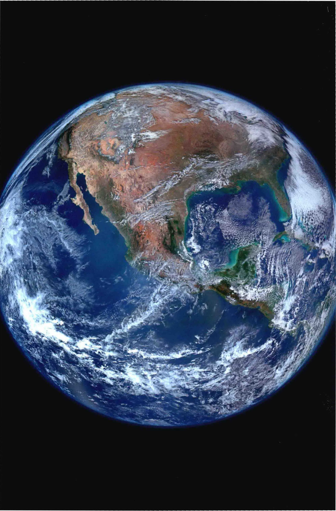
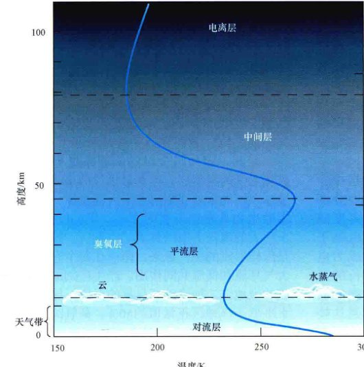
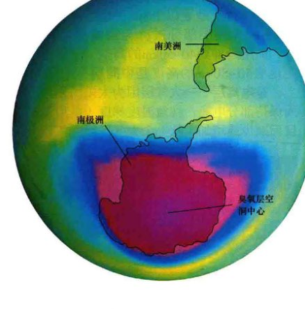
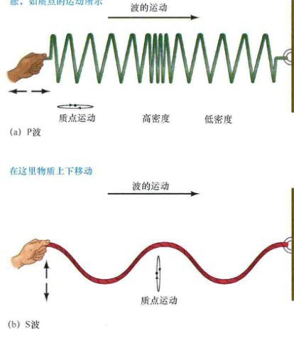
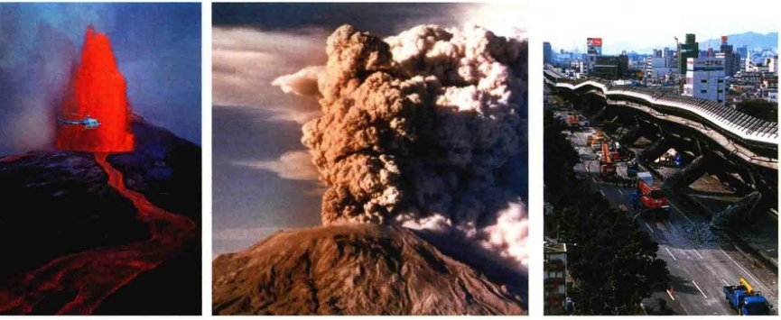
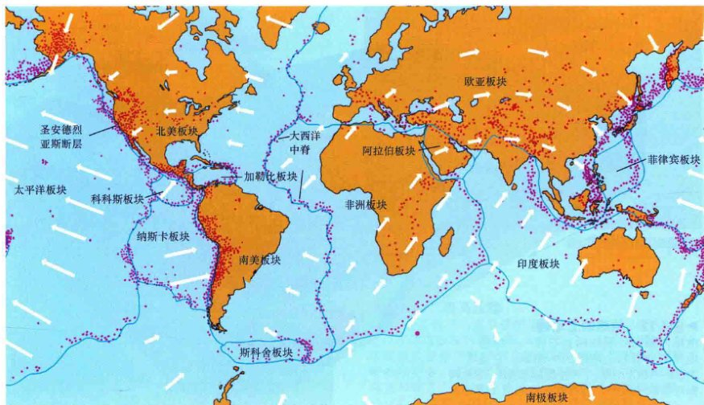
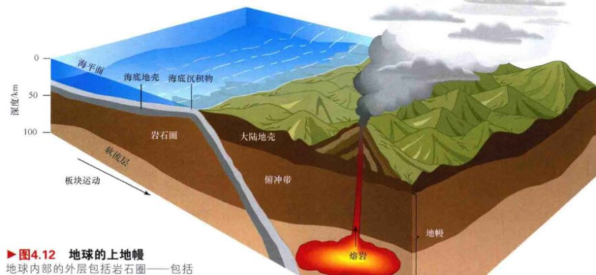

<style>
    /* 基础样式：沉浸式阅读体验 */
    body { 
        font-family: -apple-system, BlinkMacSystemFont, "Segoe UI", Roboto, "Helvetica Neue", Arial, sans-serif; 
        line-height: 1.8; 
        color: #333;
        max-width: 800px; 
        margin: 0 auto; 
        padding: 40px 20px; 
        background-color: #fff;
    }

    /* 章节单元 */
    .chapter-unit { margin-bottom: 60px; }

    /* 标题体系 */
    h1 { font-size: 2.5em; color: #004d40; border-bottom: 3px solid #00695c; padding-bottom: 15px; margin-top: 0; }
    h2 { font-size: 1.8em; color: #00695c; margin-top: 50px; border-left: 5px solid #26a69a; padding-left: 15px; }
    h3 { font-size: 1.4em; color: #00796b; margin-top: 35px; font-weight: 600; }
    h4 { font-size: 1.2em; color: #00897b; margin-top: 25px; font-weight: bold; }
    
    /* 正文 */
    p { margin-bottom: 1.5em; text-align: justify; text-justify: inter-ideograph; }

    /* 特殊区域 */
    .sidebar { 
        background: #e0f2f1; 
        padding: 25px; 
        border-left: 5px solid #009688; 
        margin: 30px 0; 
        border-radius: 4px; 
    }
    
    .box-feature {
        background: #fff8e1;
        padding: 25px;
        border: 2px solid #ffe082;
        border-radius: 8px;
        margin: 40px 0;
    }
    .box-feature h3 { margin-top: 0; color: #f57f17; }

    .concept-check {
        background: #f1f8e9;
        border: 1px solid #c5e1a5;
        padding: 15px;
        margin: 20px 0;
        border-radius: 6px;
        color: #33691e;
        font-weight: 500;
    }
    .concept-check::before { content: "✅ "; }

    .ultimate-question {
        background-color: #263238;
        color: #fff;
        padding: 30px;
        border-radius: 8px;
        margin: 50px 0;
    }
    .ultimate-question h3 { color: #80cbc4; border-bottom: 1px solid #546e7a; padding-bottom: 10px; }

    /* 习题/测试区域 */
    .exercises { background: #fafafa; padding: 25px; margin: 40px 0; border: 1px solid #eee; border-radius: 8px; }
    .question-list { padding-left: 20px; }
    .question-list li { margin-bottom: 10px; }

    /* 图片占位符 */
    .image-placeholder { 
        background: #f8f9fa; border: 1px solid #dee2e6; 
        display: flex; align-items: center; justify-content: center;
        margin: 25px auto 10px auto; 
        color: #6c757d; font-family: monospace; font-size: 0.8em;
        position: relative;
    }
    .image-placeholder::before { content: "🖼️ Image Area " attr(data-bbox); display: block; margin-bottom: 5px; }
    
    .caption { 
        font-size: 0.9em; 
        color: #666; 
        text-align: center; 
        margin-bottom: 35px; 
        font-style: italic; 
        padding: 0 10%;
    }
    .caption strong { font-weight: bold; color: #333; font-style: normal; }
    
    /* 科学符号优化 */
    sup, sub { font-size: 0.75em; }
</style>
<article class="chapter-unit">

<h1>第4章 地球</h1>
<h3>我们在太空中的家</h3>
<p>地球是人类研究得最为透彻的类地行星。我们在自己的行星上发展出生命、智慧、文化，以及所有我们现在用于探索宇宙的技术。我们自己同岩石、树木、空气一样，也是“地球的组成部分”。现在，人类开始探索太阳系，我们可以利用关于地球的知识，帮助自己了解其他行星。</p>
<p>地方和区域性事件，如火山、地震、天气；以及全球性的趋势，如气候变化、大陆漂移，帮助我们解读我们自己的世界和其他邻近的行星。我们收集的关于地球的结构和历史的每一条信息，对我们理解生活于其中的行星系统都起着至关重要的作用。</p>
<aside class="sidebar">
<h3>学习目标</h3>
<p>本章的学习将使你能够：</p>
<ol>
<li>总结地球的物理性质。</li>
<li>解释地球的大气层如何帮助温暖我们，以及保护我们。</li>
<li>概述目前的地球内部模型，介绍一些用于建立模型的实验技术。</li>
<li>总结“大陆漂移”现象的证据，并讨论驱动它的物理过程。</li>
<li>叙述地球磁层的性质和起源。</li>
<li>解释月球和太阳如何影响地球的表面和自转。</li>
</ol>
</aside>
<aside class="sidebar">
<h3>知识全景</h3>
<p>如果我们理解宇宙和它的许多不同内容的壮美，我们必须先来认识我们自己的星球。许多天文学教科书略过地球，声称它是地质学的范畴。然而，地球是一个平台，我们通过它来观测更大、更深远的宇宙。我们必须以宇宙的视角来探索我们的地球在宇宙天体体系中的地位。地球是一个重要的天体——行星，它自身以及其内的东西都重要。我们对天文学的研究始于自己的家。</p>
</aside>
<div class="caption">
<strong>左图：</strong> 这样的照片显示出地球挂在太空中，像一个“蓝色大理石球”，引导我们感激我们星球上的生命，以及我们在宇宙中的位置。这张照片的中心是美洲，揭示了空气、水、土地和我们这个星球上的生命是一个复杂的、不断变化的互动系统。我们对地球了解越多，我们就能越好地比较和对比我们的家园与其他行星和卫星。这张图片是在2012年由新一代环绕地球的气象卫星中的第一个拍摄的许多照片拼接而成的。这是在太空中拍摄过的我们家园的最美丽的照片。[美国国家海洋和大气局 (NOAA) / 美国国家航空航天局 (NASA)]
    </div>
<h2>4.1 地球的整体结构</h2>
<p>地球的物理和轨道特性都使用类似在第3章提及的那些技术来确定：通过简单的几何学来确定地球半径，通过月球的轨道来测量地球的质量（3.2节）。通过本文的主体，我们将在必要时对数字四舍五入，分别采用地球的质量为 6.0 × 10<sup>24</sup>kg、半径为 6400km。</p>
<p>用质量除以体积，我们发现地球的平均密度大约是 5500kg/m<sup>3</sup>。这个简单的计算使我们能够得出关于我们星球内部的一个非常重要的推论。通过直接测量，我们知道，覆盖大部分地球表面的水的密度为 1000kg/m<sup>3</sup>，而处于我们身下的大陆中以及海底里的岩石，具有的密度范围为 2000~4000kg/m<sup>3</sup>。于是马上就可以得出这样的结论，因为表面层的密度远远小于平均值，所以致密得多的材料必然位于表面下更深处。因此，我们应该想到，地球内部的大量物质非常致密，比地表最致密的大陆岩石更为致密。</p>
<p>根据许多不同方式的基础上的测量——使用大气中的飞机、轨道上的卫星、大地上的仪器、海洋中的潜艇，以及岩层下的钻井装置——科学家已经建立了我们这个星球的如下整体图景：按图4.1所示，地球可被分成6个主要区域。在地球内部，厚而黏稠的地幔围绕着一个小的、由两部分组成的核。在表面上，我们有（1）相对较薄的地壳，包括固体大陆、海底和（2）水圈，其中包含占我们这个星球总表面积约70%的液态海洋。大气层位于地表正上方。在更高的地方，是被地球磁场捕获的带电粒子形成的磁层区域。事实上，我们星球的总质量主要由地表和内部贡献。气态大气层和磁层几乎没什么贡献——低于总质量的0.1%。</p>

<div class="caption">
<strong>图4.1 地球的主要区域</strong><br/>
        地球的半径为1300km的内核被一个2200km厚的液态外核所包围。在地球内、外核之外的其余大部分是地幔，最外面是一个薄的只有几十千米厚的地壳。地球表面的液体部分形成了水圈。在水圈和固体地壳上方是大气层，其中大部分离地表不超过50km。地球的最外层区域是磁层，延伸到数千千米的空间中。
    </div>
<h2>4.2 地球大气</h2>
<p>对于一个人来说，地球大气层最重要的作用是可以供我们呼吸。空气是一种混合气体，其中最常见的是氮气（N<sub>2</sub>，占体积的78%）、氧气（O<sub>2</sub>，21%）、氩（Ar, 0.9%）、二氧化碳（CO<sub>2</sub>, 0.03%）；水蒸气（H<sub>2</sub>O）的量从0.1%到3%之间变化，这取决于位置和气候。大量氧气的存在，使我们的大气在太阳系中显得很独特，即使水和二氧化碳的存在非常微量，也在我们这个星球的运作中起着至关重要的作用。</p>

<div class="caption">
<strong>图4.2 地球的大气层</strong><br/>
        地球的大气层图，展示了从地表到电离层底部温度（蓝色曲线，底轴）和压强（右轴）的变化。压强随着高度的增加稳步下降，但温度或升或降，取决于到地面的高度。
    </div>
<h3>大气结构</h3>
<p>图4.2显示了我们这个星球的大气横截面。与地球整体尺寸相比，大气的范围不是很大。它的一半位于地表以上5km的范围内，超过99%位于地表以上30km范围内。低于约12km的大气层部分被称为<strong>对流层</strong>。它的上方，向上延伸到40~50km的高空，是<strong>平流层</strong>；距地表50~80km的高度是中间层；约80km以上，是电离层——大气层因为太阳的紫外辐射而保持部分电离。注意温度梯度（随着海拔高度而减少或增加）从一个大气区域到下一个是如何变化的。</p>
<p>大气密度随高度增加而稳步下降，如图4.2的右边纵轴所示，压强也一样。适度的登山——比如4km或5km高——清楚地表明在对流层中空气变薄的情况。攀登地球上最高的山峰时，登山者必须佩戴氧气面罩。</p>
<p>对流层是地球上（或任何其他行星上）大气发生对流的区域，被地球温暖表面的热量所驱动。<strong>对流</strong>是暖空气不断上升，同时冷空气向下流动的一个过程，是将热量从一个较低（较热）的层传递到一个较高（较冷）的层的物理过程。在图4.3中，太阳加热了地球表面的一部分。加热的表面的正上方的空气被加热时，稍微膨胀，密度变低。其结果是，热空气较轻，于是开始上升。在较高的区域，出现了相反的情形：空气逐渐冷却，变得更紧密，并回到地表。地表附近的冷空气取代了漂浮上去的热空气。以这种方式，一个循环模式被建立了。这些上升和下降的空气对流不仅有助于对大气加热，而且还产生了地表的风。对流单元的不断运动产生了我们经历的所有天气情况。</p>

<div class="caption">
<strong>图4.3 对流</strong><br/>
        对流产生的循环事件是我们熟悉的地球大气层的风，由太阳对地面的加热造成。热空气反复上升、冷却、下降到地球。假设热源（对地球而言是太阳）保持不变，最终，稳定的循环模式将被建立和维持。
    </div>
<p>大气对流还可以创建晴空湍流——我们有时在飞机上遇到的颠簸。上升和下降的空气团，特别是在蓬松的云（当水蒸气凝结在对流单元凉爽的顶部时，它们是对流过程的结果）的下面时，会导致飞机出现起伏。出于这个原因，客机往往会飞到上述大部分湍流的上方，在对流层的顶部或平流层的下层飞行，这里的大气是稳定的、空气是平静的。</p>
<p>距离地面约100km以上，在电离层中，大气层被太阳辐射的高能部分显著地分解成分子，再分解成原子和离子。电离度随着海拔高度的增加而增加。许多自由电子的存在，使得这一区域的上层大气成为电的良导体，使电离层能反射特定波长的无线电。AM电台可以被远远低于地平线的收听者听到的原因是，它们的信号在到达接收器之前就被电离层反射了。但是，调频信号不能被低于地平线的台站收到，因为电离层对波长较短的FM波段的无线电波是透明的。</p>
<h3>大气臭氧</h3>
<p>平流层内的<strong>臭氧层</strong>位于距离地面约25km处，入射的太阳紫外辐射被大气中的臭氧和氮吸收［臭氧 (O<sub>3</sub>) 由三个氧原子结合成一个单一的分子。紫外辐射场将臭氧分解，再次形成氧分子 (O<sub>2</sub>)］。</p>
<p>臭氧层是一个绝缘球，保护地球上的生命免受外太空严酷环境的伤害。不久前，科学家们判断太空是高级生命的敌人，因为那里缺少可供呼吸的空气和温暖的环境。现在大多数科学家仍然认为外太空环境严酷，表现在那里有强烈的辐射和高能粒子，这两者都对人体健康有害。如果没有臭氧层的保护，高级生命（至少在地球表面）在最坏的情况下是无法生存的。</p>
<p>人类的科技已经达到如此地步，它对我们的星球已经开始产生可测量的——并可能是永久的——改变。我们的聪明才智的一个特别不受欢迎的副产品，是一种被称为氟利昂 (CFCs) 的化学品，这一相当简单的化合物曾广泛用于各种用途——气雾罐的推进剂、干洗产品的溶剂、空调和冰箱的冷却剂。在20世纪70年代，人们发现，氟利昂不是以前一直认为的在使用后会迅速分解，而是会在大气中积聚，并被对流带入高处的平流层。在那里，它们被阳光分解，释放出氯，并迅速与臭氧反应，把它变成氧气。从化学角度看，氯起到<strong>催化剂</strong>的作用，它没有在反应中消耗，所以它继续存在并消耗更多的臭氧分子。一个单一的氯原子在被其他不太频繁发生的化学反应消灭之前，可以破坏10万个臭氧分子。</p>

<p>因此，即使是少量的氟利昂也会严重地破坏大气的臭氧层，氟利昂排放的最终结果是地球表面的紫外线辐射水平大幅增加，这对大多数生物具有很不利的影响。图4.4显示了一个巨大的南极上空的臭氧“空洞”。这个区域是怎样形成的呢？原来，南极在每个春季，由大气环流和低温共同作用，产生广阔的冰晶构成的极地云，加速破坏臭氧的反应，导致臭氧水平低于该地区正常值约50%。臭氧的消耗不仅仅局限于南极，虽然在南极表现最显著。较小的臭氧“空洞”已在北极地区观察到，偶尔高达20%的臭氧消耗已出现在北纬较低纬度地区。</p>
<div style="clear: both;"></div>
<div class="caption">
<strong>图4.4 南极臭氧空洞</strong><br/>
        这种卫星观测的合成图像显示了在南极大陆上空的臭氧层中的一个巨大“空洞”（粉红色）。该洞是一个地区的气候条件和人为化学品相结合的产物，夺去了大气层的臭氧保护伞。自从这个空洞在20世纪80年代被发现以来，它的深度和面积显著增长。现在它的最大尺寸已大于北美洲大陆。
    </div>
<div class="box-feature">
<h3>详细说明 4-1：为什么天空是蓝色的？</h3>
<p>有人认为，天空是蓝色的是因为它反映了海洋的颜色；另外一些人认为，海洋是蓝色的是因为它反映了天空的颜色。究竟哪个正确？答案是后者，原因是光被空气分子和微小的灰尘颗粒散射。所谓散射，就是辐射通过被这些物质吸收，然后再辐射而进行传播的过程。</p>
<p>太阳光穿过我们的大气，被空气中的气体分子散射。大约一个世纪前，英国物理学家瑞利勋爵首先考察了这种现象，因此这种现象以他的名字命名，被称为<strong>瑞利散射</strong>。散射过程对所涉及的光的波长高度敏感。</p>
<p>瑞利发现，蓝色光比红色光更容易散射，主要是由于蓝色光的波长 (400nm) 比红色光的波长 (700nm) 更接近于空气分子的大小。他接着在数学上证明，在电磁定律的基础上，散射量与波长的四次方成反比：</p>
<p style="text-align: center;">分子引起的散射量 ∝ 1 / 波长<sup>4</sup></p>
<p>瑞利公式适用于散射粒子（如分子）小于所涉及的光的波长的情形。较大的颗粒，如尘埃，也优先散射蓝色光，散射的量与波长成反比：</p>
<p style="text-align: center;">尘埃引起的散射量 ∝ 1 / 波长</p>
<p><strong>示例：</strong> 让我们比较由大气分子和尘埃引起的蓝色光 (400nm) 和红色光 (700nm) 的相对散射率。对瑞利散射而言，蓝光比红光更有效地被散射，倍率为 (700/400)<sup>4</sup> ≈ 9.4倍。即在太阳光束中，蓝色光子比红色光子多散射（将向前的光束偏转向侧面）近10倍。而对被尘埃散射而言，相应的因子是 (700/400) = 1.75 ——差距不太大，但仍足以产生很大的影响，尤其是当空气恰好特别脏时。</p>
<p>当太阳高高挂在天上时，入射阳光被散射的蓝色分量远远超过其他任何色彩成分。因此，一些蓝色的光在我们和太阳之间的连线上消失，并可能在大气中经过多次散射才最终进入我们的眼睛，如第1张图所示。红色或黄色的光散射相对较少，主要沿直线到达我们的眼睛。净效应是，太阳因为蓝色光的消失而看起来“发红”，而远离太阳的天空则呈现为蓝色。在外太空，那里没有大气，太阳光没有瑞利散射，所以天空是黑色的（不过，在《今日天文——恒星：从诞生到死亡》第7章中，我们将看到来自遥远恒星的光也以同样的方式变红，因为它穿过星际气体云和尘埃）。</p>
<p>在清晨或黄昏，太阳在地平线附近，阳光必须通过更厚的大气才能到达我们的眼睛——这些大气是如此之厚，以至于事实上太阳光的蓝色部分几乎完全散射出我们的视线，连红色部分的强度也大幅度减弱。因此，太阳本身出现橙色——太阳正常的黄色和太阳光谱中蓝端的减少所造成的一点红色的组合——并且比中午时暗得多。</p>
<p>在多尘的一天结束时（第2幅图），白天的天气情况或人类活动造成的多余的颗粒跑到空气中，波长较短的瑞利散射可以是如此严重，令太阳呈现出灿烂的红色。当我们夏天向西看太阳在海面上“西沉”时，海水分子蒸发到空气中，或在一座活火山释放了大量的气体和尘埃颗粒进入空气几个星期甚至几个月之后——比如1991年当菲律宾皮纳图博火山喷发时在北美遇到的情况——红化往往特别明显。</p>

</div>
<p>在20世纪80年代末，人们认识到氟利昂对大气的影响，全球迅速行动，减少它们的生产和使用，并制订了到2030年完全淘汰它们的目标。大幅度的削减已经实现，而这样做的协议已成为一种国际合作的模式。尽管如此，科学家们仍认为，即使所有剩余的氟利昂排放今天就停止，大气中现有的氟利昂仍然会需要几十年的时间才能完全消失。</p>
<h3>表面加热</h3>
<p>大部分太阳辐射穿透地球大气层，最终到达地面（见详细说明 4-1，可以了解更多关于大气如何在入射的阳光到达地表前对其产生影响）。大多数这种能量以可见光和近红外辐射的形式出现——这就是普通阳光。基本上，所有的不被上层大气中的云层吸收或反射的辐射都会被地表吸收。其结果是，我们这个星球的表面及坐落其上的大多数物体在白天显著升温。地球不能无限地吸收太阳能，因为如果它这样做，表面会很快变热到足以被熔化，我们这个星球上的生命也就不存在了。</p>
<p>随着地球被加热，地表将所吸收的能量的大部分再辐射出去。这种再辐射符合黑体辐射曲线。随着表面溫度的上升，根据斯特藩定律，辐射的能量迅速增加。最终，地球将从太阳处接收的能量的绝大多数辐射回太空，形成一个稳定的平衡。在缺乏任何复杂影响的情况下，这种平衡将达到平均温度约250K (-23℃) 的表面温度。维恩定律告诉我们，在该温度下，再发射能量的大部分是红外辐射（热）的形式。</p>
<p>但实际情况更加复杂。红外辐射被地球大气层部分阻断，主要是因为水蒸气和二氧化碳分子的存在，它们非常有效地吸收红外线。尽管这两种气体只占我们的大气成分的一小部分，但它们却吸收了从地表发出的红外辐射的很大一部分。因此，只有一些辐射逃逸回太空，其余的则被困于我们的大气层中，使温度增加。</p>
<p>这种部分捕获太阳辐射的效果被称为<strong>温室效应</strong>。这个名字来源于一个事实——在温室中的一个类似过程，阳光相对不受阻碍地穿过玻璃窗，但大部分植物所发散出来的红外辐射却被玻璃阻挡，无法脱身。因此，温室内部被加热，花、果实、蔬菜甚至可以生长在寒冷的冬天。辐射过程确定了地球大气的温度，如图4.5所示。地球的温室效应，使我们的星球比起没有温室效应的情况热了几乎40 K (40℃)。</p>

<div class="caption">
<strong>互动图4.5 温室效应</strong><br/>
        不被云层反射的阳光到达地表，将地表加热。从地表再辐射的红外辐射被大气中的二氧化碳（也包括水蒸气，此处未显示）部分吸收，从而导致整个地表的温度上升。
    </div>
<p>温室效应的大小对大气中所谓的温室气体（即，能有效地吸收红外辐射的气体）的浓度是高度敏感的。二氧化碳和水蒸气是最重要的，不过其他气体（如甲烷）也推波助澜。地球大气中的二氧化碳量不断增加，这主要是由于工业化和发展中国家燃烧化石燃料（主要是石油和煤）。在20世纪，二氧化碳的含量增加了20%以上，它们将继续以目前的每十年4%的速度上升。探索4-1讨论地球大气中二氧化碳水平上升的原因和一些可能随之而来的后果。</p>
<div class="box-feature">
<h3>探索 4-1：温室效应和全球变暖</h3>
<p>在本文中，我们看到在地球大气中的温室气体试图将热量留在地球表面——最明显的是水蒸气和二氧化碳 (CO<sub>2</sub>) ——将我们这个星球的温度提高了几十摄氏度。就其本身而言，温室效应不是一件坏事——实际上，它是水在地球表面以液态存在的原因，因此它是生命在我们的星球上出现的至关重要的原因（见第13章）。但是，如果大气中的温室气体水平毫无限制地上升，其后果就可能是灾难性的。</p>
<p>在18世纪工业革命以来，特别是在过去的几十年里，地球上的人类活动稳步提高了我们大气中的二氧化碳含量。化石燃料（煤，石油，天然气）仍是现代产业的主导能源，燃烧时释放出 CO<sub>2</sub>。与此同时，一度覆盖了我们星球的广袤森林，正在被系统地摧毁，以便为人类扩张腾出空间。在这种情况下，森林扮演了一个重要的角色，因为植被吸收二氧化碳，从而为大气中的二氧化碳含量提供了一种自然控制机制。因此，砍伐森林也会增加地球大气中温室气体的排放量。第1幅图显示在过去的2000多年里，大气中的二氧化碳含量。注意在过去两个世纪中的急剧增加。</p>
<p>所谓<strong>全球变暖</strong>，是指大气中二氧化碳的高含量导致的增强的温室效应造成的地球表面温度缓慢上升。如第2图所示，在过去的一个世纪中，全球平均气温上升了约0.5℃。这似乎并不算很多，但气候模型预测，如果二氧化碳水平继续上涨，到21世纪结束时，全球平均气温将进一步上升多达5℃。这种升温将发生在全球范围内、足以造成严重的气候变化。这样的温度上升可能会（有些人会说可能）造成以下现象：</p>
<ul>
<li>冰川和极地冰盖融化，导致到2100年会有高达1米的海平面上升，导致沿海地区发生广泛的洪灾。</li>
<li>更长、更加恶劣的极端天气——热浪、干旱和野外火灾——在它们之间有更多的降水（雨和雪）。</li>
<li>农作物歉收从温带向两极移动。</li>
<li>沙漠向人口稠密的赤道地区扩展。</li>
<li>在未受保护的人群中传播热带疾病的蚊子和其他害虫的数量增加。</li>
</ul>

<p>化石记录表明，在地球的历史上，之前已经发生了很多次大规模的气候变化，但从来没有变化得这么快过。这前所未有的变化速度对许多物种（包括一部分人类）的生存会造成威胁。</p>
<p>在4.2节中，我们描述了氟利昂——这是可能导致意想不到的全球性后果的又一件现代科技产品——对地球臭氧层的破坏所构成的危险，看到了当其对环境的影响一旦被认定，人们是多么迅速地采取措施遏制它们的使用。随之而来的国际社会协调一致的应对全球气候变暖的动作却慢了许多。大多数科学家认为，增强了的温室效应能真正威胁到地球的气候，人们呼吁迅速和大幅度削减二氧化碳的排放量，然后减缓并最终扭转对森林的毁坏。</p>
<p>但是有人认为——特别是与温室气体的生产有关的产业——地球对温室气体排放量增加的长期反应太复杂了，不能简单地得出的结论，立即采取行动是不必要的。他们认为，当前的温度趋势可能是更长温度周期的一部分，或许自然的环境会随着时间的推移而渐渐稳定，大气中的二氧化碳水平甚至无须人工干预而逐渐减少。部分由于这些反对意见，限制碳排放的国际协议在美国（目前最大的温室气体排放者）未能获得批准，因而收效甚微。</p>
<p>这些辩论已经变得越来越政治而不是科学——与本文其他地方谈到的严谨的科学思想完全不同！基本的观测和许多基本的科学没太多人关注，人们反而更注重进行解释、长期的争论和激烈的讨论。有时将两者分离是不容易的，但结果却可能对地球上的生命至关重要。</p>
</div>
<p>在第6章中，我们将看到大气中二氧化碳含量增加到失控的一个例子——金星，结果从根本上改变了其表面的条件，导致其温度上升至超过700 K。虽然没有人预测过地球的温度将达到金星的程度，不过许多科学家现在认为，我们这个星球正在增长的二氧化碳含量如果不加以控制，可能会导致全球温度在未来半个世纪上升几个开尔文 (K) ——足以造成戏剧性的、并可能是灾难性的地球气候的变化，包括海平面上升、疾病的加速传播等。</p>
<h3>地球大气的起源</h3>
<p>为什么我们的大气层由目前的成分构成？为什么不是完全由氮气或者二氧化碳组成——就像金星和火星的大气？地球大气的起源和发展是一个相当复杂和漫长的过程。</p>
<p>当地球最初形成时，初始的大气由早期太阳系中最常见气体的组成，包括：氢、氦、甲烷、氨和水蒸气——和我们今天享受的空气相去甚远。几乎所有这些低密度气体，尤其是氢气或氦气，在地球形成后的几亿年左右就逃离地球进入太空。（欲了解更多有关行星如何保留或失去它们的大气，见详细说明 5-1）。</p>
<p>随后，地球大气发展到了第二阶段，火山活动令地球从内部脱气（排出）。火山气体富含水蒸气、甲烷、二氧化碳、二氧化硫和含氮化合物（如氮气、氨、一氧化氮）。太阳紫外线辐射将更轻的富含氢的气体分解成原子，允许氢逃逸，并将氮从与其他元素的化合中释放出来。由于地球表面的温度下降，水汽凝结，海洋形成。大部分二氧化碳和二氧化硫溶解在海洋中或结合在地表的岩石内。氧是易反应的气体，任何出现在早期的游离氧都会很快发生各种反应而被除去。主要由氮气组成的大气慢慢地出现了。</p>
<p>我们这个星球大气发展的最后一个主要阶段迄今已知只在地球上发生过。生命在海洋中出现于35亿多年前，生物体最终开始生产大气中的氧气。臭氧层形成了，为地表屏蔽了来自太阳的有害辐射。最终，生命蔓延并繁盛在了陆地上。事实上，氧气是现今大气的主要成分，是地球上生命演化的直接结果。</p>
<div class="concept-check">
<strong>概念理解检查：</strong> 为什么温室效应对地球上的生物而言很重要？
    </div>
<h2>4.3 地球内部</h2>
<p>我们居住在地球上，但我们却不能轻易探测我们这个星球的内部。钻探齿轮在坏掉前不可能走得太远。没有任何可用于钻探的物质——包括金刚石，这是我们已知最坚硬的物质——能承受超过10km深度的压力，而与地球半径 (6400km) 相比，这是相当浅的。幸运的是，地质学家已经开发出了其他技术，间接探测我们星球的深处。</p>
<h3>地震波</h3>
<p>靠近地球表面的岩石的突然错位——地震——导致整个地球发生微小的震动。地球像一个巨大的钟一样鸣响。但这些振动不是随机的，它们是系统的波，被称为<strong>地震波</strong>（英文名 seismic waves, seismic是希腊语“地震”的意思），从震中向外传播。像所有的波一样，它们携带着信息，这些信息可以被敏感的设备——<strong>地震仪</strong>（被设计用于监控地球震颤）——检测和记录。</p>
<p>几十年的地震研究已经证实了多种地震波的存在。其中两种对地球内部结构的研究而言特别重要。首先到达一个遥远的地震监测站的是地震主波，或称<strong>P波</strong>，这是纵波——有点像空气中的普通声波——交替扩展和压缩介质（地核或地幔）并通过它们传播。地震P波通常以 5~6km/s 的速度传播，可以穿过液体和固体。过了一段时间后（实际延迟时间取决于到震中的距离），次级波，或称<strong>S波</strong>到达，这是横波。S波是沿着自己的传播方向上下震动物体，而P波是左右震动，有点像弹一根吉他的弦。在图4.6中画出了这两种类型的波。S波穿越地球内部的速度为3~4km/s，但是，它们不能穿过液体，会被吸收。</p>
<p>P波和S波的速度依赖于所穿过的介质的密度。因此，如果我们测量地震波从震中传播到地球表面的一个或多个监测站所花费的时间，我们就可以判断出地球内部物质的密度。图4.7画出了一些P波和S波离开震中的路径。位于世界各地的地震仪测量震波到达的时间和强度。这两项观测包含很多有用的信息——有关地震本身，以及通过地震波的传播说明的关于地球内部的信息。注意，地震波不会从这个星球的内部直线通过。因为波速随深度增加，走得更深的地震波往往会赶上稍浅路径上的地震波，并且它们穿过内部时会弯曲。</p>

<div class="caption" style="text-align: left;">
<strong>图4.6 P波和S波</strong><br/>
        (a) 推进波 (P波) 通过地球内部传播，会导致介质沿波的方向振动。介质交替地收缩和膨胀。(b) 剪切波 (S波) 产生垂直于波的方向的运动，推动介质从一侧到另一侧。
    </div>
<div style="clear: both;"></div>
<p>几十年前，经过无数次的地震监测，一个特别重要的结果显露出来：相对于震中位于地球另一侧的地震台站从未检测到S波，这些波被地球内部的物质所阻隔。此外，尽管P波能到达地球另一侧的地震台站，在地球的一部分表面却几乎接收不到，如图4.7所示。大多数地质学家认为，S波被地心处的液态地核所吸收，而P波被地核的边界折射，就像光线被透镜折射一样，其结果是，我们观察到的S波和P波的“阴影区”。事实上，地震表现出的这些阴影区表明了我们星球的核心是热的液体的最好证据。</p>
<p>阴影区的大小依赖于地核的半径，对地震数据的仔细分析揭示出一个半径约3500km的地核。事实上，在图4.7所示的P波阴影区观察到非常微弱的P波。这些被认为是被半径为1300km的、位于外围液态<strong>外核</strong>中心的固态<strong>内核</strong>所反射的。</p>

<div class="caption">
<strong>图4.7 地震波</strong><br/>
        地震产生的推进波(P波或主波)和剪切波(S波或次级波)可以被世界各地的地震台站探测到。地震波在地球内部传播时弯曲，因为我们这个星球的密度和温度有变化。S波（标示为红色），无法被为地球液态地核所“遮挡”的监测站接收到。P波（标示为绿色）确实到达了地球的对面，但它们与地核发生相互作用，产生了另一个“阴影”区，在这里几乎没有P波被探测到。
    </div>
<h3>地球内部的建模</h3>
<p>因为地震往往发生在全球各地，所以地质学家已经积累了大量的关于阴影区和地震波特性的数据。他们用这些数据，以及关于地表岩石的直接知识，建立起地球内部的数学模型。我们关于这个星球最深处的知识几乎完全基于我们的建模和间接观测。在本文中，我们会发现更多关于这个强大组合的例子。</p>
<p>图4.8给出了一个大多数科学家都接受的模型。根据这个模型，地球的外核被厚的地幔包围，最外面是薄薄的地壳。地幔有3000km厚，占我们这个星球体积的大部分 (80%)。地壳的平均厚度仅15km——海底薄一点（约8km），有的大陆下方厚一点（20~50km）。地壳物质的平均密度大约是 3000kg/m<sup>3</sup>，密度和温度随深度增加。具体而言，从地球表面到中心，从大约 3000kg/m<sup>3</sup> 的密度增加至 12000kg/m<sup>3</sup> 多一点，温度也逐渐上升，从低于 300K 到超过 5000K。大部分地幔的密度居于地核和地壳的密度之间——约 5000kg/m<sup>3</sup>。</p>

<div class="caption" style="text-align: left;">
<strong>图4.8 地球内部</strong><br/>
        地球内部的计算机模型暗示，从地幔到地核，密度和温度有很大的不同。地震模拟是了解地球内部的关键。
    </div>
<p>中心的高密度向地质学家表明，地球的内部物质必须含有丰富的铁和镍。由于承受着沉重的压力，这些金属（在地表之下，其密度约 8000kg/m<sup>3</sup>）可以被压缩至由模型预测的很高密度。幔-核边界密度的急剧增加是由两个区域之间的差异导致的。地幔由致密的岩石类材料——硅和氧的化合物组成；地核则主要包含更为致密的金属元素。在内核的边界没有类似的密度或温度跳跃——在这个边界，物质从液态变成固态。</p>
<p>该模型表明，地核必然是镍、铁与其他一些较轻的元素——可能是硫——的混合物。如果没有直接的观察，很难绝对确定这些较轻的成分。地质学家一致认为大部分的地核必然是液体。阴影区的存在要求这一点（正如我们将看到，我们目前对地球磁场的解释依赖于它）。然而，尽管温度很高、中心约400万倍大气压的压力也高到足以迫使物质进入固态。</p>
<p>因为地质学家们一直无法深入超过10km，所以没有实验能涉及地幔的样本。然而，我们对地幔的性质并非全不知情。在一座火山上，炽热的熔岩从下面的地壳上涌、带来的一点点地幔物质令我们能窥见地球内部的一些端倪。对新出现的熔岩的化学和物理特性的观测与图4.8中勾勒的模型图是总体一致的。</p>
<p>上地幔的成分可能是相当于铁-镁-硅酸盐的混合物，被称为玄武岩。你可能已经看到了一些暗灰色的玄武岩散落在地球表面，特别是在火山附近。玄武岩是地幔物质以岩浆的形式从地球内部上涌、冷却，然后凝固形成的。玄武岩有着 3000~3300kg/m<sup>3</sup> 的密度、比它稍轻的花岗岩（密度 2700~3000kg/m<sup>3</sup>）构成了地壳剩余的大部分。花岗岩比玄武岩含有更多较轻的硅和铝元素，这就解释了为什么表面大陆不下沉进入地球内部。它们的低密度成分使地壳“漂浮”在下面的地幔和地核致密的物质之上。</p>
<h3>分化</h3>
<p>那么，地球不是一个均匀的岩石球体。相反，它具有层状结构，具有在表面的低密度的地壳、中等密度的地幔和一个高密度的地核。密度和成分的这种变化被称为<strong>分化</strong>。</p>
<p>为什么我们的星球不是一个大的、密度均匀的岩石球体？答案似乎因为是地球的大部分在过去的某个时候处于<strong>熔融</strong>状态。其结果是，高密度的物质沉向中心，密度较低的物质移向地表。这个古老的加温过程的遗迹今天仍然存在：地球的中心温度和太阳的表面温度几乎相等。什么样的过程负责加热整颗星球到那种程度？要回答这个问题，我们必须尝试将过去可视化，如图4.9所描绘的那样。</p>
<p>根据目前的太阳系形成模型（见第12章），当地球形成于46亿年前时，它通过捕捉周围的物质增长质量，席卷了其附近大块的“行星前”物质。（3.6节）年轻的行星逐渐增长，它的引力场加强，捕获的击中其表面的小天体越来越多。此过程产生了大量的热——非常大量，事实上，地球可能在达到现在的大小时就已经被部分或全部熔化了。地球开始出现分化，重的物质下沉到中心，更多的引力势能被释放，内部温度自然会进一步增加。</p>
<p>后来，地球继续被形成过程中遗留下来的碎片轰炸。这一过程在约40亿年前达到高峰。这第二波轰击很可能非常激烈，足以让地球表面熔融，但只影响到几十千米的深度。风和水的长时间侵蚀慢慢将地球早期阶段的痕迹抹掉，但月球仍带有很明显的因这些撞击而留下的疤痕。</p>

<div class="caption" style="text-align: left;">
<strong>图4.9 地球的分化</strong><br/>
        地球内部从早期开始发生了很大变化。(a) 最初，46亿年前，地球很可能由于碎片轰击已经部分熔化，并因为引力逐渐收缩。(b) 第二阶段，约40亿年前，地球被密集轰击，可能导致其已经冷却的表面再次成为深达几十千米的完全熔融状态。(c) 早已出现、一直持续到现在、但程度较轻的一个效应——放射性衰变从内部加热地球导致内部液化，这一效应允许较重的金属下沉到核心，而重量更轻的岩石则漂浮到表面。
    </div>
<p>地球形成后，加热地球的第二重要的过程是<strong>放射能</strong>——依靠某些罕见的重元素，如铀、钍（见详细说明4-2）所释放出的能量。这些元素释放能量来加热它们的周围。释放能量的机制是复杂而较重的原子核衰变（裂变）成简单而较轻的原子核。虽然由一个单一的放射性原子衰变产生的能量是很小的，但地球含有大量的放射性原子，并提供了大量的时间。岩石就是这样一个热的不良导体，能量会经历非常长时间才能到达地表并逃逸入太空，所以热量留在了地球内部，与地球形成时留下的能量融为一体。</p>
<p>这些足够多的放射性元素遍布原始地球，很像蛋糕上的葡萄干，当时整个地球——从地壳到地核——可能已经融化，并保持约10亿年的熔融状态。以人类的眼光看，这是一个漫长的时间，但对于宇宙的时间表而言却并不长。对地表一些岩石的年龄测量表明，地球的地壳终于在最初形成大约7亿年后开始固化。当然，放射性加热并未在这时停止，在地球表面冷却和凝固后，这样的加热仍继续。但放射性衰变只在一个方向上发生，即较重的元素生成较轻的元素。衰变一旦发生，较重的和稀有的放射性元素将不能得到补充。</p>
<div class="box-feature">
<h3>详细说明 4-2：放射性年代测定</h3>
<p>我们知道，原子由电子和原子核组成，原子核由质子和中子组成。原子核中的质子数决定了它属于什么元素。然而，中子的数目可以有所不同。事实上，大多数元素可以存在几种同位素，它们都含有相同数量的质子，但原子核中的中子数不同。到目前为止，我们遇到的独特的原子核——氢、氦、碳和铁的最常见形式——都是稳定的。例如，单拿出一个碳12原子核，由6个质子和6个中子组成的，它永远不变——不会破碎成小块，也不会变成别的。</p>
<p>但是，并非所有的原子核都是稳定的。许多原子核，如碳-14（含6个质子和8个中子）、钍-232（90个质子、142个中子）、铀-235（92个质子、143个中子）、铀-238（92个质子、146个中子）、钚-241（94个质子和147个中子）本质上是不稳定的。单拿出一个原子核，它们最终都会裂变成较轻的“子”原子核，在这个过程发出一些基本粒子并释放一些能量。变化是自然发生的，没有任何外部影响。这种不稳定性被称为<strong>放射性</strong>。由放射性元素瓦解释放出的能量是核裂变反应堆（和原子弹）的基础。</p>
<p>不稳定的重原子核裂变成较轻的原子核会更加稳定，但它们没有立即这样做。每个不同的“母”原子核需要一定特有的时间才能衰变。<strong>半衰期</strong>是指给定的“母”原子核样本裂变一半所需要的时间。请注意，这是一个真正的概率问题。我们不能确定在给定的半衰期中具体有哪些原子核会衰变，我们只能说有一半会衰变。如果一个给定的材料样品具有半衰期 $T$，那么我们就可以写出一个简单的表达式来算出经过时间 $t$ 后剩余物质的量：</p>
<p style="text-align: center;">剩余物质的量 = $(1/2)^{t/T}$</p>

<p>每一种放射性同位素都有自己的半衰期，其半衰期通过20世纪50年代以来进行的研究而得知。例如，铀-235的半衰期是7.13亿年，铀-238为45亿年。一些放射性元素更迅速地衰变，其他的速度则要慢得多，但是，这两种类型的铀对地质学家来说特别重要，因为它们的半衰期与太阳系的年龄相当。第2张图举例说明了四种不稳定的较重原子核的半衰期和衰变反应。</p>
<p>不稳定的放射性原子核衰变为更稳定的子核，为我们提供了一个有用的工具，用于测量任何我们可以拿到手的岩石的年龄。第一步是测量给定的种类（例如，铅-206，这是铀-238衰变的产物）稳定核素的量，然后将此量与不稳定的母原子核（在这个例子中，铀-238）的剩余量进行比较。由于我们已知衰变的发生率（半衰期），所以能据此算出岩石的年龄。如果某些元素的母原子核有一半发生了衰变，则子核的数目等于母核，岩石的年龄就必然与放射性核的半衰期相等。同样，如果只有1/4的母原子核剩下（子核数量是母核的3倍），那么岩石的年龄就是该元素半衰期的两倍，以此类推。</p>
<p>事实上，通过上述方法确定的年龄有百分之几的误差。地球上最古老的岩石距今39亿年。这些珍贵的标本在格陵兰岛和拉布拉多群岛被发现。</p>
<p><strong>示例：</strong> 假设对一个岩石样品的仔细的化学分析表明，样品中每剩余一个铀-238的核，对应有0.41个铅-206核。如果我们假设最初不含铅-206，因此每一个铅-206核都是铀-238核的衰变产物，我们可以很容易地计算出铀-238原子核剩余的比例。答案是：</p>
<p>铀-238原子核剩余的比例 = 1 / (1 + 0.41) = 0.71 ≈ (1/2)<sup>0.5</sup></p>
<p>由上式可知，经过的时间必须是铀-238的半衰期的一半，或22.5亿年。如果我们重新分析铀-235和铅-207，我们希望找到在测量误差范围内一致的结果：22.5亿年是 2250/713 = 3.2倍铀-235的半衰期，所以只有 $(1/2)^{3.2} \approx 11\%$ 的铀-235保持下来了——其产物铅-207的数量相对于其母原子核铀-235的数量的比值超过8:1。</p>
<p>放射性年代测定技术依赖于假设当岩石持续发生放射性衰变时保持固体状态。如果岩石融化，便没有理由认为子核会留在它们的“父母”占据的相同的位置上，整个方法就会失效。因此，放射性年代测定表明岩石自上次凝固已经过去了的时间。所以，39亿年的数值代表我们这个星球的真实年龄的一部分——下限，它无法测量地球处于熔融状态的时间。</p>

</div>
<p>因此，早期的热源随时间减少，从而在过去的40亿年里使地球逐渐冷却。在这个过程中，地球已经从外部冷却，就像一个热马铃薯，因为最接近地表的区域可以最轻松地释放多余的热量到太空。地表以这种方式形成了一个坚硬的外壳，内部则出现了现在由地震研究所揭示出来的层状结构。</p>
<div class="concept-check">
<strong>科学过程理解检查：</strong> 如果我们的地球地质活动不活跃，没有任何火山或地震活动，科学家是否还能建模地球的内部？
    </div>
<h2>4.4 表面活动</h2>
<p>地球的地质今天还活跃。它的内部在沸腾，表面也在不断变化。图4.10显示了地表的两种地质活动的一些例子：一座火山，让熔化的岩石和滚烫的火山灰通过表面的裂缝或裂纹上涌，随之而来是地震——承受了巨大压力的地壳突然移动。近年来，灾难性的火山和地震是比较罕见的事件，但对岩石、熔岩和其他表面特性的研究意味着，在很久以前表面活动必然更加频繁，可能还更为猛烈。</p>

<div class="caption">
<strong>图4.10 地质活动</strong><br/>
        (a) 夏威夷的基拉韦厄活火山。基拉韦厄火山似乎在持续喷发中。(b) 其他更多突然的爆发，如1980年5月18日美国华盛顿州的圣海伦斯火山，是罕见的灾难性事件，释放了超过一千颗核弹爆炸的能量。(c) 1995年1月，日本神户发生地震，夺去了超过5000人的生命，并造成数十亿美元的经济损失。
    </div>
<h3>大陆漂移</h3>
<p>许多以往地质事件的痕迹遍布我们的地球。甚至风和水的侵蚀也抹不去许多古老地质活动的证据。现代勘探站会记录最近期的活动，如地震和火山喷发。图4.11是我们这个星球目前活跃的地区的地图。红点代表火山或地震的发生点。在过去的一个世纪，几乎所有这些地点都经历了表面活动，其中一些受到了很大的伤害和损失，甚至许多人失去了生命。</p>
<p>图4.11的有趣的方面是，活动点没有均匀地分布在我们的星球上。相反，它们沿着能清晰定义的路线活动，在这些路线上，地壳岩石移动（如地震）或地幔物质上涌（火山）。在20世纪60年代中期，科学家们意识到，这些线是真正巨大的“板块”的轮廓，是地球表面的砖。最令人惊奇的是，这些板块正在慢慢移动，我们星球的表面正在真正地漂移。这些板块的运动创造了地球表面的山脉、海沟和其他大尺度结构，并塑造了大陆自身。这个过程俗称为“大陆漂移”、或者更专业地被称为<strong>板块构造</strong>。图4.11标出了世界的主要板块。</p>

<div class="caption">
<strong>图4.11 全球板块</strong><br/>
        红色圆点代表的活动点，是20世纪主要的火山或地震的发生地。总体看，活动点勾勒出巨大的“板块”，用深蓝色表示，它们在我们星球的表面上到处漂移。白色箭头显示板块运动的总体方向和速度。
    </div>
<p>总体看，板块构成了地球的<strong>岩石圈</strong>，包含地壳和上地幔的一小部分。岩石圈是地球进行构造活动的部分。岩石圈在地幔的半固体的部分上流动，这个部分被称为<strong>软流层</strong>。图4.12示出了地球这些区域之间的关系。</p>

<div class="caption" style="text-align: left;">
<strong>图4.12 地球的上地幔</strong><br/>
        地球内部的外层包括岩石圈——包括地壳的全部和上地幔的一部分。它通常为50~100km厚。下面是软流层，是地幔相对较软的部分，岩石圈在软流层上漂移。
    </div>
<p>大陆漂移的想法是1912年由德国气象学家阿尔弗雷德·魏格纳首次提出的，大西洋两侧的大陆轮廓显得非常契合。注意图4.11中，巴西海岸（南美洲的东端部分）能很好地嵌进西非的象牙海岸。事实上，大部分位于南半球的大陆可以很好地结合在一起。跟随图中向后的箭头，我们可以看到，这样的契合实际上与现在板块的位置大体一致。在北半球，却并不能发现这样明显的契合情况，但如果我们考虑到整个大陆架（在水下的大陆边界），而不仅仅看海平面上的部分，这种情况会显著改善。</p>
<p>几乎没有人同意魏格纳的想法，部分原因是没有已知的驱动板块运动的机制。几乎所有的科学家都认为，大片的地壳岩石可以漂过我们的星球表面，这是很荒谬的。这些持怀疑态度的观点持续了半个多世纪，直到支持大陆漂移的数据大量积累并获得了压倒性优势。相似的化石在大西洋两侧大陆“结合在一起”的地方被发现，对大西洋海底中心附近的研究（接下来会有更详细的讨论）暗示板块分离形成了新的地壳。今天，获得了大量证据支持的魏格纳的“疯狂”理论形成了研究我们这颗行星外层的所有地质科学的基础。（1.2节）</p>
<p>板块不会在一些古老的初始运动后简单地放缓，最后停止。相反，它们今天仍然在漂移，虽然速度极慢。一般情况下，板块漂移的速度每年只有几厘米——大约相当于你手指甲的生长速度。不过，这对现代化设备的测量能力而言是明显的。奇怪的是，全球监测板块运动的最佳途径之一是对非常遥远的天体进行准确的观测。类星体距离地球数亿光年之遥，在天空中从来没有表现出任何可测量的源于自己的视运动。因此，它们的位置的任何明显变化（在校正地球的运动后）可被解释为由望远镜的运动——也就是望远镜位于其上的大陆板块的运动——所产生的！</p>
<p>在较小的尺度上，在许多地区，激光测距和其他技术现在经常用于跟踪板块的相对运动以用于预警，如加利福尼亚州，那里可以预先警告地震活动。在地球历史的过程中，每块板块即使以缓慢的步伐漂移，也有足够的时间移动较远的距离。例如，漂移速率即使每年只有2cm，也可以导致两个大洲（如欧洲和北美）在2亿年的过程中分开大约4000km。以人类的标准，这可能是很长一段时间，但它只是地球年龄的大约5%。</p>
<p>一个常见的误解是，板块是大陆本身。有的板块的大多数确实由大陆构成，但也有的板块是由一个大陆加很大一部分海洋构成。例如，印度板块包括印度、印度洋的大部分、澳大利亚及其南部海洋，如图4.11所示。还有一些板块大多是海洋。海底本身是一个缓慢漂移的板块，海水只是填充了各大洲之间的凹陷。太平洋的东南部被称为纳斯卡板块，它不包含任何陆地。在大多数情况下，大陆只是骑在更大的板块上的乘客。</p>
<h3>板块漂移的作用</h3>
<p>因为板块向四周漂移，所以我们可能认为碰撞会是家常便饭。事实上，板块确实在碰撞，但不像两个汽车发生碰撞后会停下来，表面板块被巨大的力量驱动，它们不容易停止。相反，它们只是不停地一个冲击另一个，重塑地质景观，并引起剧烈的地震活动。</p>
<p>图4.13(a)显示了两个大陆之间目前正在发生的碰撞：印度次大陆，在印度板块向北移动方向上的顶部，撞向位于欧亚板块的亚洲大陆，如图4.11所示。地壳岩石产生的褶皱造成了山脉——在这个情况下，白雪覆盖的喜马拉雅山脉出现在了右上角。珠穆朗玛峰这样的高峰意味着，一个板块撞向另一个板块而产生的绵长而无情的力，将地球的一些地壳抬升了超过8800m。</p>

<div class="caption">
<strong>图4.13 喜马拉雅</strong><br/>
        (a) 这是通过轨道卫星拍摄的红外画面。印度次大陆位于印度板块的最北端。由于这个板块向北漂移，印度与欧亚板块的亚洲大陆碰撞，导致地球的地壳弯曲和折叠，造就了喜马拉雅山脉（右上方覆盖着白雪的地方）。(b) 在（a）中所描述的持续进程的结果可以在此图看到，这是珠穆朗玛峰附近的一片区域。[迈克尔·克莱修斯 (Michael Klesius) / 美国国家地理图片集 (National Geographic Image Collection)]
    </div>
<p>并非所有的板块碰撞都产生山脉。在其他地方，一个板块俯冲到另一个板块之下，被称为<strong>俯冲带</strong>，它会因为下沉到地幔而最终被摧毁。俯冲带大部分表现为海洋中的深沟槽。</p>
<p>并不是所有板块都会迎头相撞。正如图4.11中箭头所示，许多板块紧挨着滑过。一个很好的例子是北美地区最有名的活跃地带：加利福尼亚州的圣安德烈亚斯断层（图4.14）。该活动点有大量的地震活动，这断层标志着太平洋板块和北美板块的边界，双方在那里擦肩而过。这两大板块的运动，如涂了劣质机油的机件，既不稳定，也不顺畅。突然的颠簸发生时，它们互相反向移动，往往强大到足以引起大地震。</p>

<div class="caption" style="text-align: left;">
<strong>图4.14 加利福尼亚断层</strong><br/>
        圣安德烈亚斯断层是两个板块彼此滑过的结果。太平洋板块——其中包括加利福尼亚海岸的大片——漂流到相对于北美板块的西北部。
    </div>
<p>在其他位置中，板块互相远离。当它们退去，来自地幔的新物质出现在它们之间，形成<strong>洋中脊</strong>。注意图4.11中将北美和南美板块与欧亚板块和非洲板块分隔开的主要边界，在大西洋中部由淡线标示出来。这个巨大的断层在第二次世界大战结束后由海洋学船舶在进行海底地理研究时发现，被称作<strong>大西洋中脊</strong>。它延伸广阔，像是巨大棒球上的一条缝，一路从北大西洋的斯堪的纳维亚半岛延伸到南美洲最南端的合恩角所在的纬度。整个脊是地震和火山活跃的地区，唯一突出海平面的主要部分是冰岛。</p>
<p>水下机器人在大西洋中脊两侧不同的位置获取了海底样本，并通过放射性年代测定技术测量了样品的年龄。正如图4.15所示，最接近脊的洋底相对年轻，而在两侧，物质距离脊越远，就越古老——正如我们所希望的那样，固体板块向两边漂移分开，热的熔岩物质上涌。大西洋显然已经以这种方式成长了2亿年——这是在大西洋洋底任意一侧发现的最古老的岩石的年龄。</p>

<div class="caption" style="text-align: right;">
<strong>图4.15 海底扩张</strong><br/>
        海洋调查船获得的海底样品显示，越靠近大西洋中脊的物质越年轻、越远的越年老。
    </div>
<p>大西洋中脊的其他研究已经产出了与地球磁场有关的重要信息。由于地幔的热物质（携带着铁）出现在洋脊和凝固裂纹处，它因而变得稍微磁化，在冷却时保持了地球磁场的印记。因此，洋底保留了对过去一段时间地球磁场的记录，就像磁带录音机一样。洋底接近脊的样本被磁化，其方向与今天地球磁场的方向相同。</p>
<h3>什么驱动了板块？</h3>
<p>什么样的过程产生了如此巨大的力量，在一些地方拖动板块远离，又在别的地方和其他板块撞在一起？答案可能是<strong>对流</strong>——我们在对大气的研究中遇到过的相同的物理过程。图4.16是我们这个星球内部的前几百千米的横截面图。它大致描绘了一个洋中脊和其周围地区。在那里，海底覆盖着一层沉积物——泥土、沙子，以及数百万年来因死亡而沉积海底的海洋生物。在沉积物下是约10km厚的花岗岩，低密度地构成了地壳的岩石。更深处是上地幔，其温度随深度而增加。在岩石圈的下方，也许是50km的深度，温度足够高，导致地幔足够柔软且能以缓慢的速度流动，但它并非熔融状态。这个区域就是软流层。</p>

<div class="caption">
<strong>互动图4.16 板块漂移</strong><br/>
        地球的构造板块的运动是对流引起的——上地幔的巨型环流模式拖动整个板块在地表运动。
    </div>
<p>该结构对对流而言是完美的——暖的物质位于冷物质之下；热的地幔岩石上升，就像大气中热空气上升一样。有时候，岩石通过花岗岩地壳的裂缝挤压出来。每隔一段时间，这样的裂缝就可能会在陆地上出现，产生如圣海伦山这样的火山，如图4.10(b)所示，或是一个像黄石国家公园那样的间歇泉。然而，大多数这样的裂缝都在洋底。大西洋中脊就是一个典型的例子。</p>
<p>并非所有在上地幔上升的热岩石都可以挤过裂隙。一些热岩石冷却并下降回落到较低的地方。通过这种方式，大环流在上地幔内被建立，如图4.16所示。骑在这些对流模式顶部的是板块，环流格外迟缓。半固态岩石需要几百万年才能完成一个环流。当然，细节远未确定且仍然存在争议。许多研究人员怀疑，在板块边界附近的大尺度环流模式推动着板块运动。</p>
<p>这个持续的板块物质的回收利用提供了一个天然的<strong>岩石循环</strong>——我们地球表面的岩石不断重新分配，并从一种类型转变成另一种类型的过程——的解释。在地表以下很深的地方，在软流层，温度足够高，地幔岩石以熔融<strong>岩浆</strong>的形式存在。当这种材料冷却变硬，就会形成<strong>火成岩</strong>。火成岩（花岗岩和玄武岩都是熟悉的例子）都与火山活动（在这里，岩浆被称为<strong>熔岩</strong>）和扩张的地区——如岩浆因为两个板块分开而涌出的大西洋中脊处——有关。表面岩石的风化和侵蚀所产生的沙质颗粒沉积物可能最终成为压缩的<strong>沉积岩</strong>，如砂岩和页岩。接着，在高温或高压下，火成岩或沉积岩可能因物理或化学原因而转化成<strong>变质岩</strong>（例如，大理石和板岩）。这种情况发生时，板块会碰撞形成山脉或者俯冲进深渊。</p>
<h3>过去的大陆漂移</h3>
<p>图4.17说明了如何将所有大洲近似地拼接在一起，就像一个七巧板。地质学家认为，在过去的某个时候一个单一的庞大大陆在我们的星球上占主导地位。这个古老的超级大陆被称为<strong>盘古大陆</strong>（意思是“所有的大地”），如图4.17(a)中所示。地球的其余部分据推测被水覆盖。根据各大洲目前的位置，以及对它们目前的漂移速率的测量，发现盘古大陆是2亿年前地球上的主要大陆。恐龙——那时占主导地位的生命，可能会溜溜达达地从俄罗斯通过波士顿到得克萨斯州，而不用弄湿它们的脚。盘古大陆解释了让第一位科学家提出大陆漂移想法的地域和化石证据（前文提到过）。图4.17的其他几幅显示了盘古大陆如何分裂，它分开的小块漂移过地球表面，最终成为我们今天所熟悉的大洲。</p>

<div class="caption" style="text-align: right;">
<strong>图4.17 盘古大陆</strong><br/>
        基于目前对板块漂移速率和方向的估计，我们可以追踪回溯过去。大约2亿年前，它们可能在(a)中所示的大致位置。大洲目前的位置由(d)所示。
    </div>
<p>在过去的2亿年里，没发生什么特别的事件。我们不能认为，盘古大陆能自地壳初次形成时就完好无损的保持约40亿年，只是到最近才如此突然地分开。更可能地，盘古大陆可能是在一个更早期的阶段时形成的，在那个阶段，彼此分离的其他板块，各自带着大陆，被构造的力量驱动到一起，将它们的大陆合并成一个超级大陆。在地球悠久的历史中，可能有一系列“盘古大陆”，构造的伟力不断形成，破坏并重新形成我们这个星球的陆地。这样的事件可能有许多。</p>
<div class="concept-check">
<strong>概念理解检查：</strong> 请描述地球板块构造的原因和一些后果。
    </div>
<h2>4.5 地球的磁层</h2>
<p>简而言之，磁层是一个围绕行星的被行星磁场影响的区域，由20世纪50年代中后期发射的人造卫星所发现。图4.18勾勒出了磁层的示意图，它远在大气层之上，完全围绕着我们的星球。靠近地球的磁场整体上类似巨大的条形磁铁产生的磁场，如图4.19所示。表明空间中任一点的磁场强度和方向的磁场线由南向北运行，在该图中以蓝色箭头表示。</p>
<p>南北磁极——即磁场线与地球表面垂直相交的地方，大致与地球自转轴的两极一致。磁极相对于我们这个星球，既不固定——它们都以每年大约10km的速度漂移——也不对称。目前，地球的磁北极在加拿大北部，约北纬80°，几乎位于北美大陆中心的北方；磁南极位于约南纬60°，毗邻南极洲，位于南澳大利亚阿德莱德以南的海岸。</p>
<p>地球的磁层包含两个圆环形的高能带电粒子带，一个位于地表上空约3000 km，另一个位于地表上空20 000km。这些区域被命名为<strong>范艾伦辐射带</strong>，以一位美国物理学家的名字命名，他把一个仪器放在一个早期人造卫星上，第一次探测到了这个区域。我们称它们为“带”，因为它们在地球赤道附近最明显，也因为它们完全环绕地球。图4.19显示了这些无形的区域如何包围地球，除了北极和南极附近。</p>

<div class="caption">
<strong>图4.18 地球的磁层</strong><br/>
        磁层是环绕一颗行星的一个区域，在那里，太阳风粒子被该行星的磁场困住。这里显示的是地球磁层，远离地球的磁层被太阳风大大扭曲，一条长长的“尾巴”延伸至夜间地球一侧（图中的右侧），远远伸向太空中。磁层顶是向着太阳方向的磁层边界。
    </div>
<p>构成范艾伦辐射带的粒子起源于<strong>太阳风</strong>——从太阳上源源不断吹出来的带电粒子（3.5节）。通过太空旅行，中性粒子和电磁辐射不受地球磁场的影响，但带电粒子会受到强烈影响。如图4.19的插入图所示，磁场施加一个力给一个移动的带电粒子，使粒子围绕磁场线螺旋前进。以这种方式，从太阳风来的带电粒子——主要是电子和质子——可以被地球的磁场困住，并因此进入范艾伦辐射带。辐射带外层带主要包含电子，重得多的质子则主要积聚在内层带。</p>
<p>不经保护，我们不可能在范艾伦辐射带中生存。与可以给予人类和其他生命形式以温暖和保护的大气层不同，大部分磁层会受到大量高速的、可能非常有害的带电粒子的强烈撞击。未受保护的人体受到它们的剧烈碰撞时，这些粒子会在任何撞击位置释放大量的能量，对生物体造成严重损害。如果阿波罗飞船上没有足够的屏蔽措施，宇航员可能无法活着通过磁层而完成到月球的旅程。</p>

<div class="caption">
<strong>图4.19 范艾伦辐射带</strong><br/>
        地球的磁场有点类似一个巨大的条形磁铁的磁场，深深埋在我们这个星球中（但相对于地球自转轴略有偏移）。在远高于地球大气层的上方是磁层（浅蓝绿色区域），包含两个有磁性的、能困住带电粒子的圈状区域（灰色区域）。它们就是范艾伦辐射带。地球磁极附近的磁场线的收敛性导致粒子被反射向另一极。
    </div>
<p>范艾伦辐射带的粒子往往能在靠近磁场线接近垂直的地球的南北磁极处逃出磁层。它们与空气分子碰撞，产生了一个壮观的光线秀，被称为<strong>极光</strong>，如图4.20所示。极光颜色丰富多彩，因为大气分子与带电粒子碰撞时被激发，然后回落到基态并发出可见光。每种类型的原子或分子可以走许多条不同的激发路径，所以它返回到基态时能产生许多不同的颜色。极光在高纬度地区是最辉煌的，特别是在北极圈和南极圈里。在北方，这一奇观被称为<strong>北极光</strong>或北方之光；在南方，它被称为<strong>南极光</strong>或南方之光。</p>
<p>有时候，尤其是太阳风暴后，范艾伦辐射带可以被太阳风扭曲并比平时捕获更大量的带电粒子，使一些粒子能在低纬度地区早早地逃脱。例如，在北美，北极光通常只出现在加拿大北部和阿拉斯加。但是，太阳活动极大时，在南部很远的地方——比如美国南部——也能偶尔看到极光。</p>

<div class="caption">
<strong>图4.20 极光</strong><br/>
        (a) 多彩的极光闪烁着急速划过天际，类似巨大的窗帘被风吹起，在黑暗中发光。极光是由磁层粒子与大气中的分子碰撞后产生的光辐射形成的。颜色是由激发态离子、原子和分子重组和级联回到基态产生的。(b) 地球上空高处的极光，由航天飞机（左侧可见）拍摄。[美国国家大气研究中心 (NCAR) 、美国国家航空航天局 (NASA)]
    </div>
<p>根据图4.18，显而易见，地球的磁层是不对称的。卫星测绘揭示，它相当扭曲，并形成泪滴形的空腔。在地球面向太阳（白天）的一侧，磁层被太阳风中的高能粒子流压缩。磁层和高能粒子流之间的边界被称为磁层顶，距离我们星球的表面约10个地球半径。在背向太阳的一侧，磁场线延伸远离地球，形成一条长长的尾巴，甚至能超出月球的轨道。</p>
<p>范艾伦辐射带所在磁层的起源是什么？图4.19只是一幅艺术图，而地球的磁场并不是真的由一个位居我们星球内部的巨大条形磁铁所产生的。事实上，地球物理学家认为，地球的磁场并不是我们星球“永久的”一部分。相反，它被认为是由地球的外核不断产生，并因为地球自转才得以存在的。就像驱动机器的发电机，地球的磁场也是由转动的、导电的、我们这个星球深处的液体金属核产生的。用旋转和流动在地球内部的导电材料来解释行星（和其他）磁场的理论被称为<strong>发电机理论</strong>。快速转动和导电的液体核心对这种机制来说是十分必要的。内部结构和磁场之间的这种联系对太阳系其他行星的研究也非常重要：我们可以通过测量行星的磁场来简单地获知很多关于其内部的信息。</p>
<p>地球磁场在控制许多潜在的破坏性带电粒子进入我们星球方面扮演着重要的角色。没有磁层，地球的大气层——也许还有表面——将会被有害粒子轰击，我们这个星球上的许多生命形式可能被毁灭。一些研究者甚至认为，如果当初没有磁层出现，生命可能永远不会出现在我们这个星球上。</p>
<div class="concept-check">
<strong>科学过程理解检查：</strong> 行星磁场的存在能告诉我们行星内部的哪些信息？
    </div>
<h2>4.6 潮汐</h2>
<p>地球在行星中是独特的，因为有大量的液态水在其表面。约3/4的地球表面被水覆盖，平均深度约 3.6km。只有2%的水被包含在湖泊、河流、云彩和冰川中。其余98%是海洋，形成水圈。</p>
<p>大多数人都熟悉被称为<strong>潮汐</strong>的海平面的日常波动。在地球上多数沿海的位置，每天有两次落潮、两次涨潮。潮汐“高度”的范围——海平面的变化幅度——可以从几厘米到数米，具体取决于在地球上所处的位置以及在一年中的什么时间。开放的海洋上一次典型的涨潮高度大约 1m，但如果这股潮被集中到一次狭窄的开口处，如河口，它就可以高得多。例如，芬迪湾，位于缅因州和新不伦瑞克省之间的美国和加拿大的边境上，涨潮时潮高可以比低潮时高出近20m（相当于一座六层建筑的高度）。大量的能量被包含在海洋的日常运动中。这种能量不断蚕食和重塑我们这个星球的海岸线。在一些地方，它已被利用成为发电的能源。</p>
<h3>引力形变</h3>
<p>什么原因导致了潮汐？一条线索是我们观察到它们表现出的每日、每月和每年的周期循环。事实上，潮汐是月球和太阳对地球引力影响的直接结果。我们已经看到了引力如何保持地球和月球互相绕转，并且都绕太阳转。（2.7节）为简单起见，我们先来看看地球和月球之间的相互作用。</p>
<p>回想一下，引力的强度依赖于任何两个物体分开的距离。因此，月球对地球面向月球一侧的引力较大，而另一侧远了 12 800km（地球的直径），所受引力较小。这种引力的差异很小——只有大约3%——但它会产生明显的效果——<strong>潮汐隆起</strong>。如图4.21中所示，地球变得稍微有点细长，长轴指向月球。</p>
<p>地球上的海洋发生的变形最大，因为液体在我们这个星球的表面是最容易移动的（地球的固体物质实际上也凸出来了，但它比海洋凸出的幅度小约100倍）。因此，海洋在一些地方变得更深一点（沿地球到月球的连线），在其他一些地方变得更浅（垂直于这条线）。我们体验到的每日的潮汐是地球在这种变形下旋转的结果。</p>

<div class="caption" style="text-align: right;">
<strong>图4.21 月球潮汐</strong><br/>
        这张未按比例绘制的图显示了月球如何在相对地球近、远两侧引起潮汐。(a) 月球对地球的引力在接近月球的一侧最大，在背对月球的一侧最小。(b) 月球对不同位置的力的差异显示在(a)中，月球对地球中心的作用力确实引起了差异。离月球近的地方，海洋被拉离开地球，在另一边，地球被拉离开海洋。结果形成了我们在地球上体验到的潮汐。
    </div>
<p>月球对地球的引力变化是<strong>差动力</strong>——又叫<strong>潮汐力</strong>——的一个例子。两个天体之间的平均引力决定了它们彼此绕转。然而，潮汐力叠加在这个平均之上，容易引起天体的变形。随着距离的增加，一个天体对另一个天体的潮汐力影响迅速减少——事实上，与距离的三次方成反比。例如，如果地球到月球的距离增加一倍，那么由月球引力造成的潮汐力将减少800%。潮汐力随着距离的增加而迅速下降，这意味着一个天体对另一个天体要想有显著的潮汐效应，它们需要非常接近，或者起潮汐作用的天体非常巨大。</p>
<p>我们将看到在本书的许多内容中，潮汐力对了解天文现象是非常重要的。我们在下文将仍然使用潮汐这个词，即使我们不讨论海洋潮汐，可能的话，甚至不止限于行星。在一般的天文用途中，这个术语指的是一个天体的引力对另一个天体引起的变形效果。</p>
<p>请注意，在图4.21中，背对着月球一侧的地球也在涨潮。重力对不同部分的拉拽——在地球靠近月球的地方强，在地球中心较弱，在地球背向月球的地方最弱——导致我们这个星球正反两面的平均潮汐在高度上大致相等。在接近月球的一侧，海水被稍微拉向月球。在相对的另一侧，海水落后于被月球拉走的地球。因此，每天在任意给定的位置，涨潮会出现两次，而不是一次。</p>
<p>月球和太阳都对我们这个星球产生潮汐力。因此，不是一个潮汐，而是有两个——一个指向月亮，一个指向太阳。即使太阳比月球远375倍，但太阳的质量要大得多（是月球的2700万倍），它的潮汐影响仍然是显著的——约相当于月球的一半。它们之间的相互作用共同决定了一个月和一年中潮汐的高度。当地球、月球、太阳大致排成一条直线［如图4.22(a)所示］时，引力作用相互加强。人们通常会发现在新月和满月的时候迎来最高的潮，这样的潮汐被称为<strong>大潮</strong>；当地球—月球连线垂直于地球—太阳连线（上弦和下弦），如图4.22(b)所示时，潮汐是最小的，这被称为<strong>小潮</strong>。</p>

<div class="caption" style="text-align: right;">
<strong>图4.22 太阳和月亮潮汐</strong><br/>
        太阳和月球的组合效应产生涨潮和落潮的变化。(a) 当月球是满月或新月时，地球、月球和太阳大约成一条直线，在地球上因月球和太阳影响形成的海洋潮汐加强。(b) 当月球处于上弦或下弦时，月球和太阳的潮汐效应一部分相互抵消，潮汐最小。
    </div>
<h3>地球自转的减慢</h3>
<p>地球绕其自转轴自转一次（相对恒星）需要23小时56分钟——1恒星日。然而，我们从化石测量知道，地球的自转速度是逐渐减慢的，每过1个世纪，1天的长度增加约1.5毫秒——对人的一生来说不算多，但是经过数百万年，地球的这种稳定的自转减慢会累加。按照这种速度，9亿年前，一天只有22小时多一点之久，一年包含397天。</p>
<p>许多自然的生物钟都能引导我们得出结论：地球的自转速度在下降。例如，每天时间增加的痕迹保存在巴哈马群岛礁石上的某种类型的珊瑚中。这些增长的痕迹类似树干上的年轮，不同的是，珊瑚每天都有标记，反映了太阳光照造成的昼夜循环。然而，它们也显示出每年的变化，因为珊瑚的生长响应着地球的季节性变化，这使我们能够感知年度周期。生长在今天的珊瑚显示每年有365个标记，但古珊瑚显示出每年有多得多的沉积物增长。5亿年前的珊瑚礁化石显示珊瑚每年的生长近400个痕迹。</p>
<p>为什么地球的自转会变慢？主要的原因是月球的潮汐效应。在现实中，地球上被月球引发的涨潮不直接指向月球，如图4.21所示。相反，由于地壳与海洋以及地球内部的摩擦效应，地球的自转倾向于拖动潮汐隆起的部分和它一起转，这就造成了隆起部分的指向在地球的自转方向上与地—月连线有一个小角度（见图4.23）。月球引力对这个稍微偏移的隆起部分的净效应是减缓我们星球的自转速度。与此同时，月球慢慢呈螺旋式地远离地球，地月平均距离每年约增加4cm。</p>

<div class="caption" style="text-align: right;">
<strong>图4.23 潮汐隆起</strong><br/>
        地球上由月球引起的潮汐隆起不直接指向月球。相反，由于摩擦力的影响，隆起点在地球的自转方向上稍微超前于月球。（在这个图中，效果被大大夸大了。）由于月球的引力对近侧隆起部分的拉力大于远侧，因此整体效果是减慢地球的自转速度。
    </div>
<p>净凸起永远指向月球，因为月球的潮汐力总是超过更遥远的太阳。</p>
<p>这个过程将继续下去，直到地球自转的速率与月球绕地球的公转速率完全相同。到那时，月球将总是位于地球上同一地点的上空，而不再落后于它造成的隆起。地球自转周期将是我们目前一天的47倍，而到月球的距离是55万千米，（比目前大约大43%）。然而，这将需要很长的时间——数十亿年后——才会发生。</p>
<div class="concept-check">
<strong>科学过程理解检查：</strong> 在哪些方面，潮汐力不同于我们熟悉的符合平方反比规律的重力？
    </div>
<div class="ultimate-question">
<h3>终极问题</h3>
<p>地球形成后没多久，来自外部的碎片撞击和来自内部的辐射加热造成整个地球熔融。任何早就存有的水会蒸发并逃逸。那么，现在地球上所有的水从何而来？近3/4的地球表面充满了水，一直到巨大海洋的深处。事实上，地球上有如此多的水——只需要看一本章的开篇图——以至于它可能更应当被称为“水球”。一种可能性是，彗星——基本上是脏雪球——输送了水。另一种观点是，地球内部的水通过早期的火山涌出。但没有人确切地知道答案。</p>
</div>
<hr/>
<h2>章节回顾</h2>
<aside class="sidebar">
<h3>小结</h3>
<ol>
<li>地球的六个主要区域（从内到外）为：中央金属<strong>核</strong> (p.88)，它被一个厚厚的岩石<strong>地幔</strong>包裹 (p.88)，外围是薄薄的<strong>地壳</strong> (p.88)。我们这个星球表面的液态海洋构成了<strong>水圈</strong> (p.88)。地表上方是<strong>大气</strong> (p.88)，主要成分为氮气和氧气，并随海拔高度的升高而变稀薄。地表风和天气现象发生在<strong>对流层</strong>中 (p.89)，是地球大气层最低的由<strong>对流</strong>——热量通过类似空气和水这样的流体的上升或下降从一个地方移动到另一个地方——造成的区域 (p.89)。远离大气层的上方是<strong>磁层</strong> (p.88)，在这里，来自太阳的带电粒子被地球磁场捕获。</li>
<li>在较高的<strong>电离层</strong> (p.89) 中，大气因吸收来自太阳的高能辐射和粒子而保持离子状态；在对流层上方的<strong>平流层</strong> (p.89) 中有<strong>臭氧层</strong> (p.90)，入射的太阳紫外辐射在此被吸收。电离层和臭氧层保护我们免受来自太空的辐射的危害。<strong>温室效应</strong> (p.92) 是大气中的气体（主要是二氧化碳和水蒸气）对地球表面发射的红外辐射的吸收和捕获，它使我们这个星球的表面气温比没有这种情况时高40K。地球最初通过火山从内部释放出气体，然后由太阳辐射改变，最终被生命改造成今天的样子。</li>
<li>我们通过观察地震产生的穿过地表以下的地幔传播的<strong>地震波</strong> (p.94) 来研究地球内部。我们还可以通过分析被火山喷发带出地表的物质研究上地幔的情况。地球的中心是致密和极热的。这颗行星的铁质核心由一个固体<strong>内核</strong> (p.95) 和一个环绕在其周围的液态<strong>外核</strong> (p.95) 构成。</li>
<li>重物质下沉到行星中心，轻物质上升到表面的过程被称为<strong>分化</strong> (p.96)。地球的分化意味着，我们的地球在过去必然至少少部分熔化过。这件事可能发生的原因之一是地球的形成和随后被星际空间中的物体轰击而释放热量。另一种可能性是由地球形成材料中的<strong>放射性元素</strong>衰变所释放的能量 (p.97) 引起的。</li>
<li>地球表面由大约十几个巨大板块组成。这些板块在地表上的缓慢运动被称为<strong>大陆漂移</strong>或<strong>板块构造</strong> (p.100)。地震、火山爆发和造山运动与板块边界相关，在边界处，板块可能会碰撞、互相远离或彼此摩擦。板块的运动被认为是由地幔的对流驱动。构成了板块的岩质上层叫<strong>岩石圈</strong> (p.100)。上地幔的半固态区域被称为<strong>软流层</strong>，板块在其上滑动 (p.100)。稳定的地壳物质的循环和转化，比如板块分离、碰撞、下沉到地幔等，被称为<strong>岩石循环</strong> (p.105)。板块过去运动的证据可以在许多地方找到：在化石记录中，在地表岩石的年龄和磁性中，以及在两块大陆的轮廓可以拼在一起这一现象中。</li>
<li>地球的磁场远远超出了我们这个星球的表面。来自太阳风的带电粒子被地球的磁场困住，形成<strong>范艾伦辐射带</strong> (p.106)，环绕我们的星球。当范艾伦辐射带粒子击中地球大气层时，它们加热和电离了那里的原子，使后者以<strong>极光</strong>的形式发光 (p.106)。根据<strong>发电机理论</strong> (p.108)，行星磁场由在地球核心的导电流体（如铁水）的快速转动产生。</li>
<li>每天，地球上海洋的<strong>潮汐</strong> (p.108) 由月球和太阳的引力影响所造成，由此在水团引发<strong>潮汐隆起</strong> (p.109)。月球的潮汐效应几乎是太阳的两倍。潮汐的大小取决于太阳和月球与地球的相对方位。地球和月球之间的潮汐相互作用造成地球的自转减慢。</li>
</ol>
</aside>
<section class="exercises">
<h2>复习与讨论</h2>
<ol class="question-list">
<li><strong>LO1</strong> 通过与地球的平均密度比较，在地球地壳中的水和岩石的密度告诉我们关于地球内部的哪些信息？</li>
<li><strong>POS</strong> 地质学家如何利用地震来获取地球内部的信息？</li>
<li><strong>LO2</strong> 什么是温室效应？它会对地球表面的温度造成什么影响？</li>
<li><strong>LO3 POS</strong> 举两个原因说明，为什么地质学家认为地球核心的一部分是液体。</li>
<li>地球的分化为我们提供了这个星球历史的什么线索？</li>
<li>什么是对流？它对（a）地球大气层；（b）地球内部，会产生什么影响？</li>
<li>放射性衰变如何在地球历史的早期加热地球的？这种加热在什么时候结束？</li>
<li><strong>LO4</strong> 什么进程造成了地表山脉、海沟和地球表面的其他大尺度结构？</li>
<li>要创造地球内部的发电机需要什么条件？该发电机具有什么效果？</li>
<li><strong>LO5</strong> 给出地球磁层的简要说明并介绍它是如何被发现的。磁层如何保护我们不受残酷的星际空间的影响？</li>
<li><strong>POS</strong> 我们怎么知道地球的磁场在过去发生过逆转？你如何看待地球磁场的逆转对我们这个星球上生命的进化可能会产生的影响？</li>
<li><strong>LO6</strong> 解释月球是如何产生地球海洋的潮汐的。</li>
<li>如果月球有像地球一样的海洋，那里的潮汐效应是什么样的？在月球的一“天”会有多少涨潮和退潮？与地球相比，其高度将如何变化？</li>
<li><strong>POS</strong> 如果地球旁边没有月球，你认为我们会发现关于潮汐力的任何线索吗？</li>
<li>在地球大气中起作用的温室效应是有益的还是有害的？请举例说明。增强的温室效应的后果是什么？</li>
</ol>
<h2>概念自测：选择题</h2>
<ol class="question-list">
<li>如果你正在做地球的等比例模型，我们用一个 12in (英寸) (译注：1in=2.54cm) 的篮球代表地球，则地球内核的尺寸大约是：(a) 一个 12in 的滚珠；(b) 一个 2in 的高尔夫球；(c) 一个 4in 的橘子；(d) 一个 7in 的柚子。</li>
<li>地球的平均密度与下列哪项大致相同？(a) 一杯水；(b) 重的铁陨石；(c) 冰块；(d) 一块黑色的火山岩石。</li>
<li><strong>VIS</strong> 根据图4.2（“地球的大气层”），商用喷气式飞机飞行高度10km，会位于：(a) 对流层；(b) 平流层；(c) 臭氧层；(d) 中间层。</li>
<li>如果有明显更多的温室气体——如二氧化碳——在地球大气中，则：(a) 臭氧空洞将闭合；(b) 臭氧空洞会变得更大；(c) 地球的平均温度会发生变化；(d) 植物的生长速度将快于被动物吃掉的速度。</li>
<li>如果地震仪在月球上任何地方都记录到P波和S波，你们会认为月球有：(a) 与地球相同的层状结构；(b) 没有熔融的核心；(c) 没有月震；(d) 从内到外有相同的密度。</li>
<li>地质学家已经钻入地球最深处的深度大致相当子：(a) 自由女神像的高度；(b) 大多数商业喷气式飞机飞行的高度；(c) 纽约和洛杉矶之间的距离；(d) 美国和中国之间的距离。</li>
<li>由于板块构造，大西洋的宽度在增加，其速度大致相当于下列哪种物体的生长速度？(a) 草；(b) 人的头发；(c) 人的指甲；(d) 一个典型家庭房间中的灰尘。</li>
<li>在地球的地理北极，磁性罗盘的指针会（大约）指向：(a) 对着阿拉斯加；(b) 对着堪萨斯城；(c) 对着巴黎；(d) 指向下方。</li>
<li>如果地球没有月球，那么潮汐会：(a) 不会发生；(b) 发生得更频繁、更猛烈；(c) 仍然发生，但几乎测量不出；(d) 以相同的频率发生，但没那么强。</li>
<li>以下哪项陈述是正确的？由于潮汐：(a) 地球的自转速率增加；(b) 月球离地球的距离不断增加；(c) 地球最终会飘离太阳；(d) 地震活动增加。</li>
</ol>
<h2>问答</h2>
<ol class="question-list">
<li>将地球的大气层近似为一层7.5km厚的气体，并且密度均匀，为 1.3kg/m<sup>3</sup>，计算大气层的总质量。将你的结果与地球质量进行比较。</li>
<li>地球上大部分的冰在南极，那里的永久冰盖覆盖了地球表面约0.5%的总面积，平均厚度为3km。地球的海洋覆盖了我们这个行星大约71%的表面积，平均深度为3.6km。假设水和冰有大致相同的密度，如果全球变暖造成南极冰盖融化，估计海平面会上升多少？</li>
<li>以文中给出的数据为基础，估计下列结构占地球总体积的比例：(a) 内核；(b) 外核；(c) 地幔；(d) 地壳。</li>
<li>发生地震后，若P波以 5km/s 的速度直线移动，那么到达地球的另一边需要多长时间？</li>
<li>以 3cm/年 的速度，一个典型的板块要穿越大西洋目前的宽度（约 6000km）需要多长时间？</li>
<li>某岩石样品被检测出含有的铅-207核是铀-235核的3倍。以详细说明4-2给出的数据为基础，你认为，铀-238相对于铅-206核的比例是多少呢？</li>
<li>在第二件岩石样品中，发现铀-238核的25%已经衰变成了铅-206。以详细说明4-2给出的数据为基础，估算岩石样品的年龄。</li>
<li>你站在地球表面，满月直接在你头顶。你的体重由于太阳和月球潮汐引力的结合减少了多大比例？</li>
</ol>
</section>
</article>